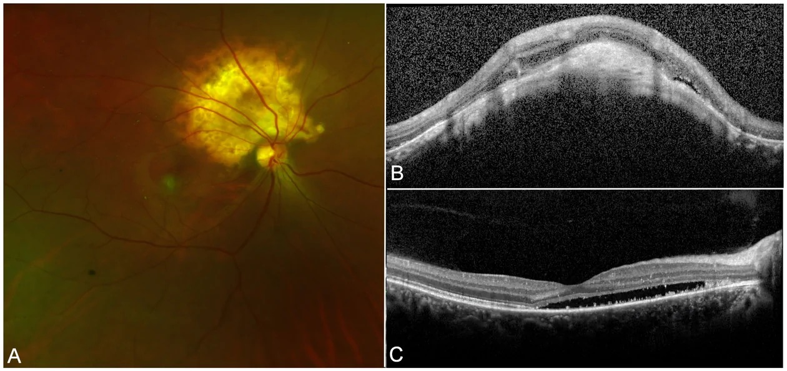
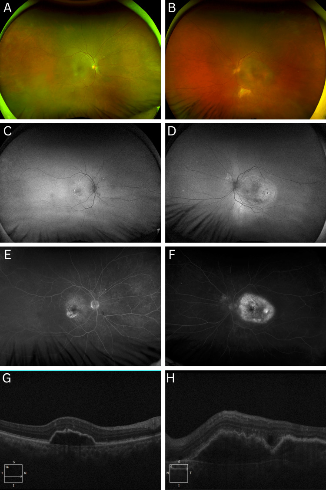
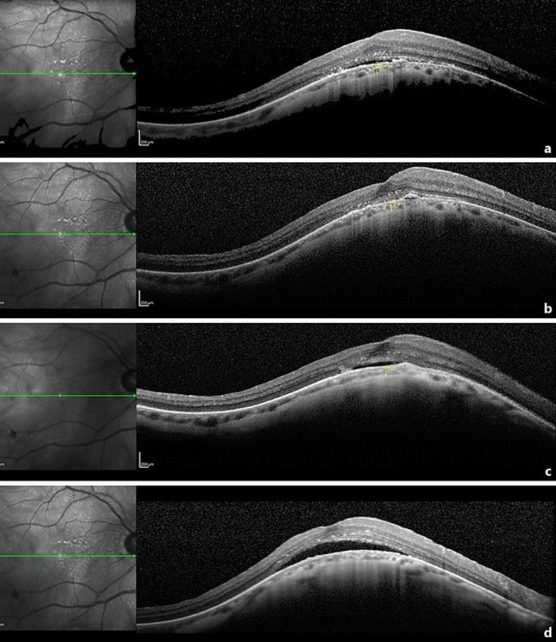

1479 — Bong võng mạc thanh dịch (không có lỗ) sau tiêm nội nhãn và sau bóc màng / Serous retinal detachment after intravitreal injection and membrane peeling
Tags: pattern:dich-duoi-vong-mac pattern:bong-vong-mac pattern:bong-thanh-dich pattern:khong-lo-rach pattern:sau-tiem-noi-nhan pattern:sau-boc-mang pattern:mat-mot-ben vung:vong-mac vung:hoang-diem vung:hac-mac protocol:OCT protocol:EDI-OCT protocol:sieu-am-B-scan protocol:FA protocol:ICGA protocol:OCTA incidentaloma:khong
Mức chắc chắn (certainty): tổng hợp y văn (literature synthesis) — dựng từ 1 nghiên cứu 207 mắt CSC quan sát 3–6 tháng (J Clin Med 2025, PMC11899871, CC BY 4.0), ca DSM + ERM bóc màng xong hết dịch 3 tháng rồi tái phát sau 1 năm (Case Rep Ophthalmol 2017, PMC5731175, CC BY-NC 4.0), ca u hắc mạc di căn hai bên bị chẩn đoán nhầm là CSC (Cureus 2025, PMC12507074, CC BY 4.0), ca u xương hắc mạc có dịch dưới võng mạc (Front Med 2026, PMC13630659, CC BY 4.0), nghiên cứu MEKAR – BRAF/MEK inhibitor (J Clin Med 2023, PMC9918243, CC BY 4.0), tổng quan OCT trong bong võng mạc (Diagnostics 2025, PMC11988441, CC BY 4.0) và ca VKH hai bên (SpringerPlus 2016, PMC4864801, CC BY 4.0). Nhóm không có bệnh nhân của mình; chỗ chưa đủ chắc ghi "chưa rõ". Không ghi tên tác giả — attribution dùng tạp chí + năm + PMCID.
Câu chốt: Bong võng mạc thanh dịch là hậu quả chung của nhiều cơ chế, không phải một bệnh — và câu hỏi sống còn luôn là "có lỗ rách hay không", vì câu trả lời đảo ngược điều trị: có lỗ = mổ, không lỗ = tìm nguyên nhân rồi theo dõi. Ba con số phải thuộc: (1) dịch thanh dịch sau bóc màng/PPV có thể hết trong 3 tháng nhưng vẫn tái phát sau 1 năm nếu có dome-shaped macula nền (PMC5731175); (2) CSC thực hành quan sát 3–6 tháng trước khi can thiệp — 207 mắt/155 bệnh nhân (PMC11899871); (3) 50–90% người lớn dùng MEK inhibitor có dịch dưới võng mạc (MEKAR) mà không cần giảm liều (PMC9164750, PMC9918243). Bẫy chết người: dịch thanh dịch hai bên ở người lớn tuổi + không tự hết = di căn hắc mạc, không phải CSC (PMC12507074).
1. Tổng quan bệnh học – cơ chế hình ảnh
1.1 TẠI SAO dịch đứng được dưới võng mạc mà KHÔNG có lỗ
Võng mạc cảm thụ không có mạch máu nuôi riêng; nó sống nhờ hắc mạc qua biểu mô sắc tố (RPE). RPE là một lớp bơm một chiều: Na⁺/K⁺-ATPase ở màng đáy bơm Na⁺ ra phía hắc mạc, nước theo áp suất thẩm thấu → hút dịch từ khoang dưới võng mạc về hắc mạc. Khoang dưới võng mạc vì thế không phải khoang trống mà là khoang "được hút khô liên tục".
Cân bằng đó vỡ theo ba hướng:
- Bơm RPE bị ức chế — corticoid (toàn thân hoặc tại chỗ), ức chế MEK/BRAF, tổn thương RPE do viêm hoặc do ánh sáng → dịch ứ lại dù không có lỗ và dù mạch máu hắc mạc bình thường. Đây là cơ chế CSC và MEKAR: hình ảnh giống hệt nhau trên OCT, khác nhau ở tiền sử thuốc.
- Áp lực thủy tĩnh hắc mạc tăng — hắc mạc dày (pachychoroid), tăng áp tĩnh mạch hắc mạc do hẹp tĩnh mạch trung tâm/tĩnh mạch nhánh, hoặc tăng áp lực hệ thống → nước bị đẩy qua RPE.
- Tính thấm mao mạch hắc mạc tăng — viêm (VKH, viêm củng mạc sau), tân mạch hắc mạc (CNV) rò huyết tương, hoặc u hắc mạc (melanoma, hemangioma, osteoma, di căn) tiết dịch.
Sau tiêm nội nhãn và sau bóc màng là hai bối cảnh hay gặp nhất trên thực hành, nhưng dịch trong hai bối cảnh này thường không do mũi tiêm hay do thao tác:
- Sau tiêm: nếu kim gây lỗ rách → bong có lỗ (RRD) — tần suất 0,02%/mũi anti-VEGF và 0,134%/mũi implant dexamethasone (xem 1469, PMC8589788). Nếu không có lỗ, dịch là bệnh nền đang hoạt động (nAMD/PNV, CSC, viêm) hoặc tác dụng thuốc — không phải "biến chứng của mũi tiêm".
- Sau bóc màng: bóc màng làm thay đổi cơ học và gây viêm nhẹ ở lớp ngoài; đồng thời nhiều mắt có dome-shaped macula (DSM) hoặc hắc mạc dày nền — hai yếu tố này tự sinh dịch và không mất đi khi bóc màng. Vì vậy dịch có thể hết sau mổ rồi tái phát dù giải phẫu "thành công" (PMC5731175).
1.2 TẠI SAO hình ảnh trông như vậy (vật lý OCT – B-scan – FA)
- OCT — vì sao dịch "đen": OCT dùng giao thoa ánh sáng có độ kết hợp thấp, đo hồi phản xạ với độ phân giải trục 5–7 µm. Nước trong gần như không tán xạ ngược → khoang dưới võng mạc là vùng giảm tín hiệu (hyporeflective), phía trên là dải tăng phản xạ liên tục của võng mạc cảm thụ, phía dưới là dải RPE–màng Bruch liên tục. Ba dấu quyết định:
- Đường ellipsoid (EZ) còn nguyên trên dịch = tế bào cảm quang chưa chết → tiên lượng tốt; EZ đứt đoạn = tổn thương không hồi phục dù dịch hết.
- Bờ dịch nhẵn, vòm, không có nếp gấp lớp ngoài (outer retinal corrugations) = dịch cấp, áp lực thấp; nếp gấp lớp ngoài là dấu của bong kéo dài (điển hình bong có lỗ mạn — PMC11988441).
- "Photoreceptor shaggy" (bờ ngoài tế bào cảm quang lởm chởm) = dịch giàu fibrin/protein, gặp trong VKH cấp và CSC cấp; không phải artifact.
- B-scan — vì sao vẫn cần dù đã có OCT: đầu dò 10 MHz cho hình cắt 2 chiều, xuyên được đục môi trường (xuất huyết dịch kính, đục thể thủy tinh). Ba điểm phân biệt: võng mạc bong luôn chạy tới đĩa thị hai đầu; bong thanh dịch là vòm nhẵn, không dính đĩa; bong hắc mạc là vòm dày, không dính đĩa, thường có nhãn áp thấp và có thể "hôn nhau" (kissing choroidals). A-scan giúp u: melanoma phản hồi nội bộ thấp–trung bình, hemangioma phản hồi cao (quy ước kinh điển, chưa có số trong các nguồn của bài).
- FA/ICGA — vì sao cần khi dịch dai dẳng: FA trả lời "có rò hay không" — CNV rò thì tăng huỳnh quang lan tỏa thì muộn; CSC điểm rò khu trú; VKH nhiều điểm tăng huỳnh quang nhỏ + đọng thuốc dạng hồ; MEKAR không rò trong vùng hoàng điểm (FA chỉ "pooling" tại chỗ bong RPE) — đây là dấu loại CSC trong ca MEKAR (PMC9918243). ICGA cho hắc mạc: mảng giảm huỳnh quang trong VKH, mạch hắc mạc giãn (pachyvessels) trong pachychoroid.
1.3 Ngưỡng định lượng nằm lòng
| Chỉ số | Ngưỡng / giá trị | Nguồn |
|---|---|---|
| Thời gian quan sát CSC trước can thiệp | 3–6 tháng (207 mắt, 155 bệnh nhân; đơn giản 164 mắt, phức tạp 43 mắt) | PMC11899871 |
| Tiêu chí CSC "phức tạp" | teo RPE ≥ 2 diện đĩa thị → tái phát nhiều hơn, cân nhắc PDT sớm | PMC11899871 |
| MEKAR (dịch dưới võng mạc do ức chế MEK) | tới 90% người lớn dùng MEK inhibitor; thường không triệu chứng, tự hết không cần giảm liều | PMC9164750 (tóm tắt hội nghị) |
| MEKAR — cơ chế | RPE + giảm tỉ lệ light peak/dark trough (Arden); FA không rò vùng hoàng điểm | PMC9918243 |
| DSM + ERM: diễn tiến dịch sau bóc màng | hết dịch 3 tháng sau mổ, tái phát sau 1 năm, to hơn sau 2 năm; độ lồi hoàng điểm 760 µm | PMC5731175 |
| VKH: tốc độ đáp ứng corticoid | dịch hết sau 4 ngày (bệnh nhân 1) và 8 ngày (bệnh nhân 2); FA còn điểm tăng huỳnh quang muộn | PMC4864801 |
| U xương hắc mạc có dịch | 36 tuổi; ranibizumab ×3 giảm dịch, tái phát ~40 tuần; faricimab 6 mg hết dịch; OCTA không có CNV | PMC13630659 |
| Di căn hắc mạc giả CSC | 72 tuổi, hai bên, dịch không tự hết nhiều tháng; u phổi 3,0 × 2,4 × 1,7 cm, T2aN1M1 | PMC12507074 |
| Bong có lỗ sau tiêm (để loại trừ) | 0,02%/mũi anti-VEGF (0,010–0,037) vs 0,134%/mũi implant DEX (0,044–0,312) | PMC8589788 (bài 1469) |
| Dấu mạn tính trên OCT | nếp gấp lớp ngoài (ORC) / undulation = bong kéo dài, không phải dịch cấp | PMC11988441 |
2. Mẫu hình + chẩn đoán phân biệt theo vị trí (gamut)
Mẫu hình (pattern): trên OCT, khoang giảm tín hiệu dưới võng mạc, bờ võng mạc vòm nhẵn, EZ còn nguyên (thường), không có lỗ rách trên soi 360° + ấn sclera; võng mạc trong suốt (không trắng đục như bong có lỗ mạn) hoặc hơi mờ khi dịch giàu fibrin. Trên wide-field: vùng mờ nhẹ, không có "nắp" lỗ, không có đứt mạch hắc mạc kiểu bong có lỗ.
Gamut theo vị trí:
- Khu trú hoàng điểm, một mắt → CSC/pachychoroid, CNV (nAMD/PNV), dịch sau bóc màng, MEKAR (thường hai bên).
- Hoàng điểm + lan ra ngoại vi nhưng KHÔNG tới ora → viêm (VKH), u hắc mạc lớn, bong thanh dịch do tăng huyết áp/tăng áp tĩnh mạch.
- Toàn bộ võng mạc (bong hình phễu nhẵn) → u hắc mạc (melanoma) hoặc di căn, bệnh máu (tăng globulin), tiền sản giật/HELLP — phải loại u trước khi theo dõi.
- Kèm hắc mạc dày lan tỏa → pachychoroid spectrum, VKH, viêm củng mạc sau, tăng áp hệ thống.
- Kèm xuất tiết cứng (hard exudates) và đốm vàng dưới võng mạc → u (di căn, osteoma, Coats) hoặc bệnh mạch máu mạn — không phải CSC cấp.
Gamut theo cơ chế (mnemonic "BƠM – ÁP – RÒ – U – LỖ"):
- BƠM (bơm RPE suy): CSC, corticoid, MEK/BRAF inhibitor, tổn thương RPE.
- ÁP (áp lực hắc mạc): pachychoroid, tắc tĩnh mạch, tăng huyết áp, hạ nhãn áp (→ bong hắc mạc, khác thực thể).
- RÒ (tính thấm): CNV, VKH, viêm củng mạc sau, u.
- U: melanoma, hemangioma, osteoma, di căn, lymphoma.
- LỖ: nếu có lỗ → RRD, không còn là "bong thanh dịch" — xem 1469.

3. Bảng so sánh phân biệt (ma trận đối chiếu)
| Thực thể (entity) | Hình ảnh điển hình | Chốt vào (rule-in) | Chốt loại (rule-out) | Gợi ý xác nhận |
|---|---|---|---|---|
| Dịch thanh dịch sau bóc màng/PPV | Dịch vòm nhẹ ở hoàng điểm, EZ còn nguyên, không lỗ; có thể kèm dome-shaped macula | Mổ bóc màng/PPV gần đây + không lỗ + dịch giảm dần theo tuần | Có lỗ rách, hoặc dịch tăng nhanh sau tuần 2 → không phải "dịch hậu phẫu lành tính" | OCT lặp 4–6 tuần; so sánh chiều cao dịch (µm) từng lần |
| CSC / pachychoroid | Dịch vòm, hắc mạc dày, FA điểm rò khu trú, ICGA mạch giãn | Nam trung niên, một mắt, hắc mạc dày, FA có điểm rò; tự hết trong 3–6 tháng | Hai bên + không tự hết + xuất tiết cứng → nghĩ u/hệ thống | FA + ICGA + EDI-OCT; theo dõi 3 tháng trước khi PDT |
| MEKAR (thuốc ức chế MEK/BRAF) | Nhiều ổ dịch nhỏ hai bên, bong RPE, FA không rò vùng hoàng điểm | Đang dùng trametinib/cobimetinib/encorafenib; dịch xuất hiện sau khởi trị, thường không triệu chứng | Có rò trên FA, hoặc một bên + hắc mạc dày khu trú → không phải MEKAR | FA (không rò) + phối hợp ung thư; thường không cần ngừng thuốc |
| VKH cấp | Hai bên, dịch vòm nhiều ổ, "shaggy photoreceptors", hắc mạc rất dày, FA nhiều điểm + đọng hồ | Hai bên + hắc mạc dày + FA nhiều điểm tăng huỳnh quang + đáp ứng corticoid trong vài ngày | Một bên, không đáp ứng corticoid, có u → loại VKH | EDI-OCT (SFCT), FA/ICGA, xét lao/giang mai |
| U hắc mạc (melanoma/hemangioma/osteoma) | Khối dày > 2 mm, sắc tố/orange pigment, B-scan khối đặc, A-scan phản hồi khác nhau | Khối đặc trên B-scan + dày > 2 mm + dịch trên bề mặt | Chỉ có dịch, không có khối trên B-scan → không phải u | B-scan + A-scan; MRI hốc mắt nếu > 2 mm; gửi chuyên khoa u |
| Di căn hắc mạc | Hai bên, mảng kem nhạt, da báo (leopard spot) trên FAF, dịch không tự hết | Người lớn tuổi + hai bên + tiền sử ung thư (hoặc sụt cân/ho); FAF da báo | Trẻ, một bên, tự hết → không nghĩ di căn | Siêu âm B-scan + CT ngực/bụng, phối hợp ung thư |
| Bong có lỗ (RRD) | Võng mạc trắng đục, gấp nếp, có lỗ/nắp, nếp gấp lớp ngoài khi mạn; dịch lan tới ora | Lỗ thấy khi soi 360° + ấn sclera, hoặc nếp gấp lớp ngoài trên OCT | Dịch vòm nhẵn, EZ nguyên, không lỗ, không nếp gấp → không phải RRD | Soi đáy mắt + wide-field; B-scan nếu đục (bài 1469) |
| Bong co kéo (TRD) | Màng xơ kéo võng mạc hình lều, dính chắc, không lỗ tự do | Đái tháo đường tăng sinh/xuất huyết dịch kính cũ + màng co kéo | Dịch vòm tự do, không màng → không phải TRD | OCT + B-scan; đánh giá màng trước võng mạc |
| Bong hắc mạc / tràn dịch hắc mạc | Vòm dày, không dính đĩa thị, nhãn áp thấp, tiền phòng nông | Nhãn áp thấp + vòm hắc mạc + không dính đĩa thị (hoặc kissing choroidals) | Dính đĩa thị hai đầu → võng mạc | B-scan + đo nhãn áp; xem thêm 411 |
| Tách lớp võng mạc cận thị (foveoschisis) | Tách trong võng mạc, cột trụ (column), không dịch dưới võng mạc thật | Cận thị nặng + tách lớp trong + thị trường ổn định | Có dịch dưới võng mạc thật lan → không phải schisis đơn thuần | OCT; theo dõi hoặc phẫu thuật theo tiến triển |
- Ảnh ghép đối chiếu: không tạo composite — 4 ảnh đến từ 4 bài, 4 bệnh nhân, khác modality và khác license (CC BY và CC BY-NC); ghép sẽ làm mất chú giải gốc và không thêm thông tin.
4. Protocol chụp + hệ phân độ/điểm chuẩn hóa
4.1 Protocol "nhìn thấy dịch là phải trả lời 3 câu"
- Có lỗ không? Soi đáy mắt giãn đồng tử + ấn sclera 360° (bắt buộc, kể cả khi OCT đẹp) + wide-field. Không thấy lỗ mới được gọi là bong thanh dịch.
- Có khối không? B-scan 10 MHz ở mọi ca dịch không giải thích được hoặc hai bên; A-scan nếu thấy khối. Khối > 2 mm → MRI hốc mắt và gửi chuyên khoa u.
- Có rò không? FA ± ICGA khi dịch còn sau 3 tháng, khi hai bên, hoặc khi nghi CNV. OCTA thay FA khi cần khảo sát CNV không xâm lấn.
Thông số OCT tối thiểu: raster hoàng điểm 6 × 6 mm, khoảng cách lát 30 µm (hoặc 19 lát theo máy), EDI-OCT để đo độ dày hắc mạc dưới hoàng điểm (SFCT); ghi lại chiều cao dịch tại hõm hoàng điểm (µm), tình trạng EZ, có/không nếp gấp lớp ngoài.
4.2 Lịch theo dõi và ngưỡng quyết định
| Thời điểm | Việc làm | Ngưỡng hành động |
|---|---|---|
| Ngay sau tiêm / sau mổ | Cảm nhận ánh sáng, nhãn áp, đáy mắt nếu bệnh nhân than mờ | Mất vùng nhìn/nhá đèn tăng → soi 360° ngay |
| 1–2 tuần | Soi 360° + OCT hoàng điểm | Dịch tăng hoặc xuất hiện lỗ → chuyển mổ |
| 4–6 tuần | OCT lặp, đo chiều cao dịch, EZ | Dịch giảm ≥ 50% hoặc hết → tiếp tục theo dõi thường quy |
| 3 tháng | FA/ICGA/OCTA nếu còn dịch; B-scan nếu nghi khối | Dịch còn + có rò → điều trị theo nguyên nhân (anti-VEGF/PDT) |
| 3–6 tháng | Quyết định can thiệp (khung CSC) | Dịch dai dẳng + hắc mạc dày → PDT; CSC phức tạp (teo RPE ≥ 2 DD) → can thiệp sớm |
| Bất kỳ lúc nào | Phát hiện lỗ hoặc TRD đe dọa hoàng điểm | Mổ trong 24–72 giờ (macula-on) |
flowchart TD
A["Dịch dưới võng mạc trên OCT, sau tiêm hoặc sau bóc màng"] --> B["Soi đáy mắt giãn đồng tử + ấn sclera 360° + wide-field"]
B --> C{"Có lỗ rách / nắp lỗ?"}
C -->|Có| D["RRD: đánh giá macula-on/off → mổ 24-72 giờ"]
C -->|Không| E["B-scan 10 MHz: có khối đặc?"]
E -->|Có khối| F["Nghi u hắc mạc: A-scan, MRI, gửi chuyên khoa u"]
E -->|Không khối| G{"Hai bên, người lớn tuổi, xuất tiết cứng, không tự hết?"}
G -->|Có| H["Nghi di căn hắc mạc: FAF, siêu âm, CT ngực-bụng"]
G -->|Không| I["EDI-OCT + FA/ICGA/OCTA khi dịch dai dẳng"]
I --> J{"Cơ chế"}
J -->|"Rò do CNV"| K["Anti-VEGF theo phác đồ"]
J -->|"Pachychoroid/CSC"| L["Quan sát 3-6 tháng → PDT nếu còn dịch"]
J -->|"Viêm VKH"| M["Corticoid toàn thân; dịch hết trong vài ngày"]
J -->|"Thuốc MEKAR"| N["Phối hợp ung thư; thường tiếp tục thuốc"]
J -->|"Hậu phẫu lành tính"| O["OCT lặp 4-6 tuần; cảnh báo tái phát do DSM"]
4.3 Khi nào KHÔNG mổ
- Dịch vòm nhẵn, không lỗ, EZ nguyên, thị lực ổn định → mổ không có gì để hàn, chỉ thêm nguy cơ (viêm nội nhãn, đục thể thủy tinh, tăng nhãn áp — xem 1425, 1465).
- U hắc mạc → điều trị u (xạ, anti-VEGF cho dịch do CNV thứ phát), không mổ bong.
- VKH → corticoid; mổ trong giai đoạn viêm làm bùng phát và tăng PVR.
5. Biến thể bình thường và cạm bẫy
- "Dịch sau bóc màng là mổ thất bại" — không đúng: dịch giảm dần trong 3 tháng là diễn tiến bình thường; nhưng nếu tái phát sau 1 năm thì phải tìm DSM, CNV hoặc lỗ bị bỏ sót (ca PMC5731175 tái phát đúng như vậy, kèm FA/ICGA không rò).
- "OCT hoàng điểm bình thường = không bong" — sai: raster 6 mm không tới ora; lỗ ở vùng tiêm 3,5–4,0 mm chỉ thấy khi ấn sclera (xem 1469).
- "Hai bên + tái phát = CSC mạn" — đây là bẫy nguy hiểm nhất: ca 72 tuổi, dịch hai bên nhiều tháng không tự hết, FAF da báo, cuối cùng là di căn từ ung thư phổi (PMC12507074). Quy tắc: hai bên + lớn tuổi + xuất tiết cứng + sụt cân/ho → B-scan + CT ngực.
- "Dịch sau tiêm là do thuốc chưa đủ" — dịch có thể là bệnh nền hoạt động (cần anti-VEGF tiếp) hoặc lỗ rách mới (cần mổ); tăng liều mù quáng trong ca có lỗ = mất thời gian vàng.
- MEKAR bị đọc thành CSC: hình OCT gần như không phân biệt được; khác biệt nằm ở thuốc đang dùng và FA không rò (PMC9918243). Đổi/ngừng thuốc ung thư vì "CSC" là sai chỉ định.
- Corticoid gây CSC: có ca CSC xuất hiện sau implant dexamethasone nội nhãn — corticoid tại chỗ không miễn nhiễm với cơ chế này (PMC5182243). Hỏi kỹ corticoid toàn thân, tiêm ngoài màng cứng, kem bôi trước khi kết luận "vô căn".
- Ảo ảnh B-scan: màng dịch kính sau dày thoáng qua bị đọc là "bong võng mạc" — phân biệt bằng dính đĩa thị và di động khi mắt đảo; bong hắc mạc không dính đĩa.
- Satisfaction of search: thấy dịch ở hoàng điểm rồi dừng lại — quên soi ngoại vi tìm lỗ và quên B-scan tìm khối.
6. Tự lượng giá — Blind Quiz ngay trên trang tĩnh
Ca 1 — dịch hai bên ở người lớn tuổi

- Gợi ý lâm sàng: nam 72 tuổi, mờ mắt hai bên tiến triển nhiều tháng, không đau, không tự cải thiện; không tiền sử bệnh mắt.
- Câu hỏi: Mô tả dấu hiệu chính trên ảnh (A–H)? Ba chẩn đoán phân biệt? Dấu hiệu nào buộc phải chụp thêm ngoài mắt?
Bấm để hiện đáp án (findings + chẩn đoán)
- Dấu hiệu: A/B ảnh tiếp xúc rộng — mảng giảm sắc tố dưới hoàng điểm hai mắt, mắt trái có bong hoàng điểm thanh dịch + xuất tiết cứng dọc cung mạch dưới; C/D FAF — hình da báo (leopard spot); E/F FA — tăng huỳnh quang dạng đốm/leopard, không có điểm rò đơn độc kiểu CSC; G/H OCT — dịch dưới võng mạc trên tổn thương hắc mạc gồ ghề, EZ bị đứt đoạn từng chỗ.
- Chẩn đoán: di căn hắc mạc hai bên (nguồn nguyên phát: ung thư phổi tế bào vảy, u 3,0 × 2,4 × 1,7 cm, T2aN1M1) — ban đầu bị chẩn đoán nhầm là CSC.
- Vì sao: dịch không tự hết, hai bên, kèm xuất tiết cứng và FA không có điểm rò khu trú → cơ chế rò từ khối u, không phải bơm RPE suy. Chốt: B-scan + CT ngực–bụng.
- Nguồn ảnh: Cureus 2025 (PMC12507074), Fig. 1, CC BY 4.0.
Ca 2 — dịch xuất hiện lại sau khi "mổ thành công"

- Gợi ý lâm sàng: nữ cận thị, màng trước võng mạc trên dome-shaped macula, đã bóc màng. Thị lực cải thiện ban đầu, sau đó mờ lại.
- Câu hỏi: (a) Dịch nằm ở đâu và có lỗ không? (b) Vì sao dịch hết rồi tái phát dù màng đã bóc? (c) Có nên mổ lại ngay không?
Bấm để hiện đáp án (findings + chẩn đoán)
- Dấu hiệu: OCT ngang qua hoàng điểm lồi ra trước (dome); a sau mổ 1 tháng — dịch giảm; b 3 tháng — hết dịch; c 1 năm — dịch tái xuất; d 2 năm — dịch nhiều hơn. Không có lỗ rách, không có co kéo còn lại.
- Chẩn đoán: bong võng mạc thanh dịch trên dome-shaped macula, tái phát sau bóc màng — không phải thất bại phẫu thuật.
- Vì sao: DSM là biến dạng củng mạc–hắc mạc; bóc màng chỉ giải quyết thành phần co kéo, còn áp lực hắc mạc vẫn còn → dịch quay lại. FA/ICGA không rò, loại CNV.
- Xử trí: theo dõi (OCT 3–6 tháng); mổ lại chỉ khi có co kéo/lỗ mới hoặc dịch đe dọa hoàng điểm kéo dài.
- Nguồn ảnh: Case Rep Ophthalmol 2017 (PMC5731175), Fig. 3, CC BY-NC 4.0.
Ca 3 — dịch nhiều ổ hai bên ở người đang điều trị ung thư

- Gợi ý lâm sàng: bệnh nhân ung thư đang dùng ức chế BRAF/MEK; khám sàng lọc 2 tuần sau khởi trị, không than mờ nhiều.
- Câu hỏi: (a) Dịch dưới võng mạc ở đâu, có rò trên FA không? (b) Chẩn đoán? (c) Có phải ngừng thuốc ung thư không?
Bấm để hiện đáp án (findings + chẩn đoán)
- Dấu hiệu: ảnh màu — nhiều ổ bong RPE nhỏ vùng cực sau; FA không rò trong vùng hoàng điểm (chỉ pooling tại ổ bong RPE); OCT — nhiều ổ dịch dưới võng mạc/bong RPE, võng mạc cảm thụ còn nguyên; OCTA — mạch hắc mạc, không thấy mạng CNV; hàng dưới — dịch tự hết khi tiếp tục điều trị.
- Chẩn đoán: MEKAR (bệnh võng mạc do ức chế MEK) — "CSC giả" do thuốc.
- Vì sao: ức chế MEK làm giảm chức năng bơm RPE (giảm tỉ lệ Arden) → dịch ứ dù không rò. Gặp tới 90% người lớn dùng MEK inhibitor, thường không triệu chứng và tự hết không cần giảm liều.
- Xử trí: phối hợp ung thư – theo dõi, không tự ngừng thuốc; chỉ can thiệp khi dịch đe dọa hõm hoàng điểm kéo dài.
- Nguồn ảnh: J Clin Med 2023 (PMC9918243), Fig. 1, CC BY 4.0.
Bài liên quan chéo
- 1469 – Bong võng mạc có lỗ sau tiêm nội nhãn (IVARD): 0,02%/mũi anti-VEGF vs 0,134%/mũi DEX; chốt bằng soi 360° + ấn sclera
- 1467 – Màng trước võng mạc (ERM): 4 giai đoạn Govetto, ngưỡng mổ và kết quả bóc màng
- 1465 – Tăng nhãn áp cấp sau tiêm nội nhãn (IOP spike)
- 1425 – Viêm nội nhãn sau tiêm nội nhãn
- 1436 – Bệnh Vogt–Koyanagi–Harada: bong thanh dịch hai bên + hắc mạc dày
- 445 – Bong võng mạc: rách – co kéo – tiết dịch
- 411 – Siêu âm nhãn cầu: phân biệt màng dịch kính – võng mạc – hắc mạc
- 1865 – Bong võng mạc tái phát sau tháo dầu
- 1441 – Bong võng mạc sau xạ trị u nội nhãn: thanh dịch vs TRLE vs co kéo
Ảnh
- Tên file:
1479_bong-vong-mac-thanh-dich_<Modality>_<PMCID>.jpg. Nguồn + giấy phép từng ảnh trongimages/CREDITS.md. - 4 ảnh, tất cả tải được (CC BY 4.0 / CC BY-NC 4.0); ảnh
.webpcủa Frontiers được chuyển định dạng sang JPG (giữ nguyên nội dung, không crop/ghép) — ghi rõ trong CREDITS.
Không dùng để chẩn đoán độc lập khi chưa có người hướng dẫn.